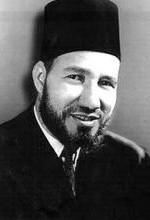

Hasan El-Benna (1906-1949)

Ýhvan-ý Müslimin hareketinin kurucusudur. Mýsýr’da doðup büyümüþ, burada hizmet etmiþ ve burada ölmüþtür. Hizmetinde teblið metodunu esas almýþ ve çevresinde bulunanlara her fýrsatta fikirlerini anlatmaya çalýþmýþtýr. Ýslamiyet’in tüm yönleriyle hakim olmasý için yönetimi ele geçirmeyi hedefleyerek faaliyette bulunmuþtur. Mýsýr baþta olmak üzere, birçok yerde etkili olmuþ, fikirleri deðiþik bölgelerde taraftar bulmuþtur. Hedefine ulaþmak için, sýnýrlý da olsa kuvvet kullanmayý kabul etmesi, hükümetin sert tedbirleriyle karþýlaþmýþ, hareketin birçok etkili ismi ortadan kaldýrýlmýþtýr. Risale-i Nur’da, Pakistan’dan gönderilen bir mektup vesilesiyle ismi zikredilmektedir. Künyesi Hasan Ahmed Abdurrahman El-Benna þeklindedir.Hasan El-Benna, 1906 yýlýnda Mýsýr’ýn Buhayre vilayeti Mahmudiye kazasýnda doðdu. Ýlk eðitimini babasýndan aldý. Alim bir zat olan babasý geçimini saatçilik ile saðlamaktaydý. Hasan, sekiz yaþýnda medreseye gitmeye baþladý. Burada Kur’an-ý Kerim dersleriyle birlikte nahiv ve Arapça derslerini de gördü. Bu okuldan sonra yeni tarzda eðitim veren Ýdadiye Medresesine gitti. Ancak, bu okullar devlet tarafýndan kapatýlýnca ayrýlmak zorunda kaldý. Arkasýndan Demenhur’da bulunan ilköðretmen okuluna kaydýný yaptýrdý.
Hasan, devam ettiði okulundan mezun olduktan sonra Kahire’ye gitti. Burada bulunan ve “Küçük Ezher” denilen Darululum’da eðitimini sürdürdü. Kendisi ile birlikte ailesi de Kahire’ye yerleþti. Bir taraftan kendini yetiþtirirken diðer taraftan da saatçilik iþinde babasýna yardým etti. O sýralarda Mýsýr’da hüküm süren Ýngiltere’nin sömürgeci ve emperyalist tavýrlarý büyük rahatsýzlýk veriyordu. Bu rahatsýzlýklara karþý tanýnmýþ alimleri bir araya toplamak için giriþim baþlattý. Neticede bir çok alimi bir araya toplamayý baþardý. Bu faaliyeti henüz öðrenciliði devam ederken gerçekleþtirdi.
Bir süre sonra cami ve kahvehane toplantýlarý düzenlemeye baþlayan Hasan, buralarda alimlerin konferanslar vermesini organize etti. Okulundan mezun olduktan sonra öðretmenliðe baþ vurdu. Akabinde Ýsmailiye’ye tayini çýktý. Burada öðretmenlik yaparken, bunun dýþýnda kalan zamanlarda cami ve kahvehanelerde dini konular üzerinde konuþmalar yaptý. Zamanla etrafýnda toplananlarýn sayýsý önemli ölçüde arttý. 1928 yýlýnda Ýhvan-ý Müslimin teþkilatýnýn kuruluþunu gerçekleþtirdi. Daha sonra beþ yýl boyunca, çeþitli kesimlere yönelik olarak gerçekleþtirdikleri daveti devam ettirdi. Ýslam’a davet adý altýnda gerçekleþen bu faaliyetler çok etkili oldu. Bu çerçevede çeþitli gençlik teþkilatlarý teþekkül ettirildi.
Hasan El-Benna, birkaç yýl sonra Kahire’ye dönünce buradaki faaliyetlerin önemli bir aþama kaydettiðini gördü. Bunun üzerine teþkilatýn merkezini Kahire’ye taþýdý. Ailesi ile birlikte Ýsmailiye’den ayrýlarak Kahire’ye yerleþti. Ýsmailiye’de bulunduðu sýrada evlenmiþti. Böylece eþi ve çocuklarýný alarak buradan ayrýldý. Kahire’de öðretmenliðe devam etmekle birlikte, mesaisinin önemli bir kýsmýný Ýhvan-ý Müslimin’in faaliyetlerine harcadý. Sadece davet faaliyetiyle yetinmeyerek teþkilatýna mensup kýz ve erkek çocuklarýnýn okuyabilecekleri okullar açmaya baþladý. Ayrýca mescit ve teþkilata merkezlik yapacak kurumlar yapýldýðý gibi, bazý iþyerleri ve fabrikalar da tesis edildi.
Okul ve medrese açma, iþyeri tesis etmenin yanýnda dini, sosyal, ekonomik, kültürel ve sportif alanlarda da faaliyetlerde bulunan Hasan El-Benna çok yönlü çalýþmayý esas aldý. Sürdürdüðü faaliyetlerle bir bakýma Mýsýrlýlar için örnek toplum vücuda getirmeye çalýþtý. Ýhvan-ý Müslimin faaliyetleri Ýkinci Dünya Savaþý’ndan sonra devletin baskýsýyla yüz yüze geldi. Aralarýnda El-Benna’nýn da bulunduðu teþkilatýn ileri gelenleri tutuklanýp hapse atýldý.
Henüz baðýmsýzlýðýný elde edememiþ ve Ýngiliz sömürgesi durumunda olan Mýsýr’da sömürgecilere karþý cihat ilan edilmesi yeni bir dönemi baþlattý. Mýsýr hükümeti teþkilatý kontrol altýna almak için baskýlarý arttýrdý. Teþkilat ve hükümet arasýnda gerginlik giderek arttý. Teþkilatýn Filistin’e mücadele için taraftarlarýný göndermesi, Arap ülkelerinden Ýsrail’e savaþ açma talebinde bulunan teþkilat hükümet tarafýndan yasadýþý ilan edilerek kapatýldý.
Hasan El-Benna, 12 Þubat 1949 günü akþamý evine giderken suikasta uðradý. Ýçinde bulunduðu otomobili yaylým ateþine tutulduktan sonra yaralý bir þekilde hastahaneye kaldýrýldý. Aðýr bir þekilde yaralandýðý suikasttan kurtulamadý ve hastahanede öldü. Suikast birkaç yýl boyunca gizli tutularak örtbas edilmeye çalýþýldý. Ancak, üç yýl sonra yapýlan tahkikat sonucu gizli polis teþkilatýndan üç kiþi suçlu bulundu. Suçlular hapse atýldýktan sonra tetiði çektiði ileri sürülen içlerinden biri ömür boyu hapse mahkum edildi.
Mýsýr toplumunun fakirlikten ve esaretten kurtulmasý için çaba sarfeden Hasan El-Benna, fikirleriyle gerek Mýsýr, gerekse diðer bölgelerde yaþayan bir çok Müslüman’ý etkiledi. Geri kalmýþlýðýn ve yoksulluðun sebebini, Ýslam’ýn özünden sapmaya baðladý. Batý taklitçiliðini sert bir þekilde eleþtirdi. Kendi dini deðerlerinden ve kültüründen uzaklaþan toplum, Batý eðitim sisteminin de etkisiyle kimliðinden uzaklaþmýþ ve kimlik bunalýmý yaþamaya baþlamýþtýr. Düþülen kötü durumdan kurtulmanýn yegane çaresi olarak, Ýslam’ýn özüne dönme gereði üzerinde durdu.
Hasan El-Benna, Ýslamiyet’i gerçek yönleriyle insanlara öðretme hedefiyle hareket etti. Fikirleriyle topluma yön vermeye çalýþtýðý gibi teþekkül ettirdiði kurumlarla da kendine göre, örnek toplum modelini kurmaya çalýþtý. Yerleþik bir hal alan, dinin özüne ters durumlara karþý sorgulayýcý tavýr takýndý. Ayrýca falcýlýk, cincilik, büyücülük gibi Ýslam dýþý durumlara karþý çýktý. Veli zatlarý anmanýn ve güzel faaliyetlerini yad etmenin insaný Allah’a yakýnlaþtýrdýðýný söyledi. Ancak, velilerin kimseye yardým edemeyeceðini, yardým etmenin sadece Allah’a mahsus olduðunu da ifade etti.
Önemli tartýþmalara konu olan kabir ziyaretlerinin meþru ve sünnet olduðunu belirtti. Ancak, bu ziyaretlerde ölüden deðil, sadece Allah’tan medet ve yardým beklenebileceði ikazýnda bulundu. Kin, nefret ve düþmanlýk üzerine kurulu ýrkçýlýk ve buna dayanan milliyetçiliði reddetti. Batýlýlarýn, Ýslam ülkelerini önce borçlandýrdýklarýný, kendilerine baðýmlý hale getirdiklerini, arkasýndan empoze ettikleri eðitim sistemiyle kendilerine yakýn seçkin zümreler vücuda getirdiklerini, basýn ve yayýn yoluyla da insanlarý istedikleri þekilde yönlendirdiklerini belirtti.
Hasan El-Benna’nýn tüm Ýslam dünyasý tarafýndan tanýnmasýnýn en önemli sebeplerinin baþýnda kurucusu bulunduðu Ýhvan-ý Müslimin hareketi gelmektedir. Mýsýr’da yönetime gelmeyi hedefleyen bu hareket, Mýsýr ve diðer bazý ülkelerde isminden söz ettirdi. Birçok kimseyi etkiledi. Ancak, hareketin sýnýrlý da olsa kuvvete izin vermesi, iktidarý ellerinde bulunduranlarýn çok sert þekilde karþýlýk vermeleri için fýrsat oldu. Kendisi bir suikast sonucu öldürüldüðü gibi, daha sonra teþkilatýn ileri gelenleri ortadan kaldýrýldý. Hareket büyük kan kaybýna uðradý.
Hasan El-Benna’nýn ismi Pakistanlý M. Sabir’in mektubunda zikredilmektedir. Pakistan Karaþi Üniversitesinde asistan olan M. Sabir bir çok mektup yollamýþ ve bu mektuplarý Risale-i Nur’a alýnmýþtýr. 30.03.1957 tarihli mektubunda; “Said Nursi Hazretlerine burada çok hürmet vardýr. Onu severiz, onun sýhhat ve uzun hayatý için dua ederiz. Ýslâm dünyasýnda Said Nursî'nin eþi yoktur. Mýsýr'da bir Hasanü'l-Benna vardý (þehit edilmiþtir); Yutmiz’de Ýkbal vardý (vefat etmiþtir); hâlen bir Mevdudî var. Baþka büyük adamlar da vardýr; lâkin Üstadýmýz gibi yoktur. Üstad, Ýslâm dünyasýnýn cevheridir. Onun hakkýnda malûmat azdýr. Onun eserleri Farsça, Ýngilizce ve Urduca’ya tercüme edilmemiþtir. Lâkin istikbalde olacaktýr” (Tarihçe-i Hayat, 1994, s. 622) þeklinde duygularýný ifade etmiþ, Risale-i Nurlarýn birçok dile tercümesiyle ümit ve dileði gerçekleþmiþtir.
Hatýralarýný ve fikirlerini Müzekkiratü’d-dave ve’d-daiye adlý eserinde kayda geçirmiþtir. Deðiþik zamanlarda yazdýðý risaleleri Mecmuatü resaili’l-imami’þ-þehid Hasan el-Benna adlý kitapta bir araya toplatýlmýþtýr.